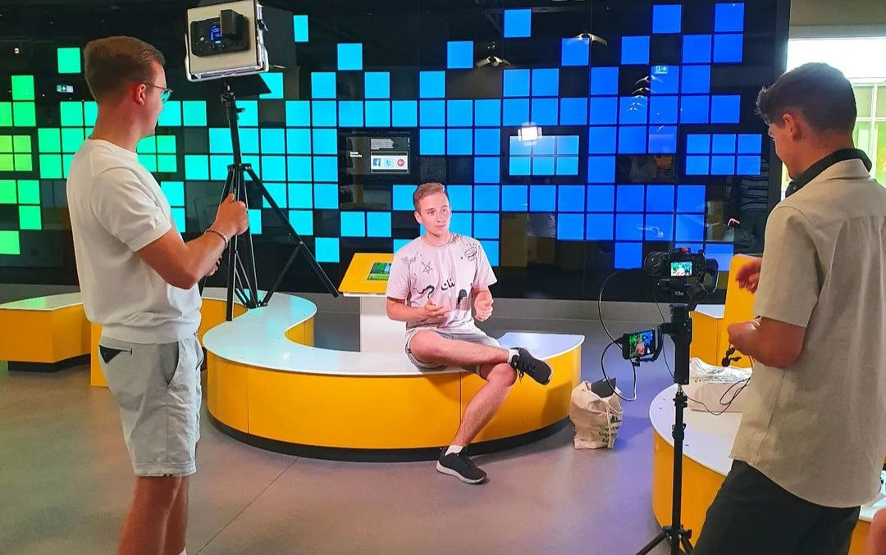

PROJEKTE
Ukraine-Hilfe
Als Schülersprecher des Kreisgymnasium Hochschwarzwald organisierte ich zusammen mit einem Team aus 5 weiteren Mitschülerinnen und Mitschüler mehrer Waffelverkaufe und "Friedentauben"verkäufe. (siehe: https://www.badische-zeitung.de/kreisgymnasium-waffeleisen-laeuft-heiss-fuer-fluechtlinge)
Dabei kam die stolze Summe 1800€ zusammen, die wir symbolisch per Scheck der Bürgermeisterinnen der Stadt Titisee-Neustadt überreichten. Das gespendete Geld kam der Ukraine-Hilfe der Stadt Titisee-Neustadt zu Gute. (siehe: https://www.badische-zeitung.de/ukraine-hilfe-x4otwj4qx)"
Teamer bei YL
Als Teamer engagiere mich ehrenamtlich bei der Bildungsorganisation YL. Hier im Heinz Nixdorf MuseumsForum in Paderborn hatte ich im Zuge einer Veranstaltung an einem Film für die Organisation mitgewirkt.